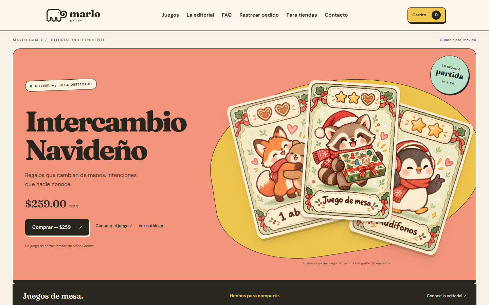
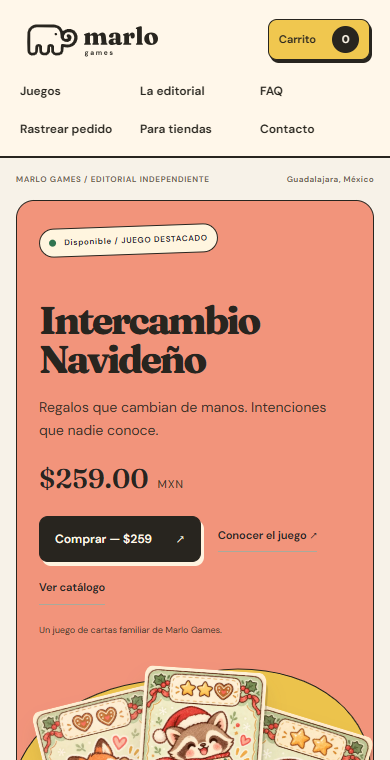

El elefante de Marlo.
El dibujo aprobado, convertido a vectores: silueta compacta, tres patas redondeadas y trompa enrollada. «marlo» en Fraunces y «games» en DM Sans, conservando la tipografía aprobada.
01 / En la página de inicio


La misma identidad en toda la web.
Encabezado, pie de página y sección «Una editorial independiente». El elefante reemplaza al círculo amarillo con las letras m/g.
02 / Favicon y app icon
16 px
32 px
Apple Touch · 180 px
App icon · 512 px
03 / Variantes de un solo color
Tinta · #28251F
Calabaza · #BD512B
Negro · #000000
Blanco · #FFFFFF
04 / Símbolo independiente
Archivos de marca
SVG reales con trazados, sin imágenes incrustadas ni dependencia de fuentes. PNG transparentes para cada logotipo y símbolo; iconos de aplicación sobre fondo crema.